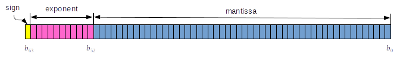
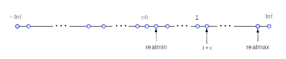

Floating Point Numbers
Contents
1.4. Floating Point Numbers#
There is no way to express real numbers in discrete systems. For example, we cannot express any irrational number using a finite number of letters 0-9. Therefore, we express real number approximately using scientific notation such as \(1.32567 \times 10^{12}\). Similarly digital computers use so-called floating point representation. A single precision floating point stores a real number in a 32-bit string, of which 24 bits are used for mantissa. The corresponding significant figure is \(\log_{10} 2^{24} \approx 7\). The exponent part is \(2^{2^7}=2^{-128}\) to \(2^{2^7-1}=2^{127}\) which is approximately \(10^{-38}\) to \(10^{+38}\). One bit is used for the sign, which results in \(-0.\) and \(+0.\). They are treated as two different number.
Usually, the single precision is not accurate enough for computational physics. A double precision floating point uses a 64-bit string, 54 bits for mantissa and 10 bits for exponent as shown in Fig. 1.1. The largest value the mantissa can express is \(2^{53} = 9007,199,254,740,992\), which corresponds to significant figure 16. The maximum exponent part is between \(2^{-2^9} = 2^{-512} \approx 10^{-308}\) and \(2^{2^9-1} = 2^{511} \approx 10^{308}\).[1] Any value above the largest floating point number is treated as infinity, which appears as inf in output.
Common CPUs used in desktop and laptop computers are capable of double precision floating point arithmetic. The default size of floating point in python is 64.

Fig. 1.1 64-bit string for floating point expression. The last bit is used for the sign and 11 bits from \(b_{52}\) to \(b_{62}\) express the exponent. The remaining 52 bits express the mantissa.#
Since the floating point numbers are quantized, there is always a gap between the nearest two floating point numbers. Any values inside the gap cannot be expressed in standard computer languages, which may causes inaccurate results due to quantization error. The positive value next to zero is \(1.1754944 \times 10^{-38}\) for single precision. (See Fig. 1.2.) If we try to use a number between zero and the smallest floating point value, underflow error occurs. Another gap we should pay attention to is the machine epsilon \(\epsilon\), the gap between 1 and next number above it. There is no floating point value between \(1\) and \(1+\epsilon\). (See Fig. 1.2.)

Fig. 1.2 Discreteness of floating point numbers.#
In some cases such as \(\sqrt{-1}\), the value is not defined as a real number. The outcome of such calculation is expressed as nan (not a number).
1.4.1. Numpy#
NumPy is the fundamental package for scientific computing in Python. Although there are other math packages, we use numpy exclusively. See Numpy documentation for its usage. A book by Oliphant[1] is also recommneded.
In order to use it, we must first load the package. In this lecture, we load it as
import numpy as np
where np is a shorthand name of numpy. This is fairly standard.
Example 1.4.1 Range of floating point numbers
Let us try to find the largest and smallest numbers in your computer system. We use the float_info class in sys library.
# load sys package for system information
import sys
fmin = sys.float_info.min
fmax = sys.float_info.max
print("Smallest float =",fmin)
print(" Largest float =",fmax)
Smallest float = 2.2250738585072014e-308
Largest float = 1.7976931348623157e+308
Example 1.4.2 Special value inf
Find what is the outcome of a number larger than the maximum or smaller than minimum.
print("max * 10 =", fmax*10.)
print("min / 10 =", fmin/10.)
print("min * 10^{-20} =", fmin * 1.e-20)
max * 10 = inf
min / 10 = 2.225073858507203e-309
min * 10^{-20} = 0.0
Note that the value smaller than the smallest float is obtained. This means that denormalized float [1] is used below the smallest in the standard float. However, if the value is even smaller than the smallest in denormalized float, th e anser is replaced with 0.
Example 1.4.3 Special value nan
See the outcome of \(\sqrt{-1}\).
import numpy as np
print("sqrt(-1)=",np.sqrt(-1))
sqrt(-1)= nan
/tmp/ipykernel_14299/3943542636.py:3: RuntimeWarning: invalid value encountered in sqrt
print("sqrt(-1)=",np.sqrt(-1))
import sys
sys.float_info.min
sys.float_info.max
1.7976931348623157e+308